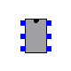
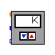
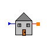
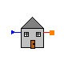
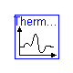
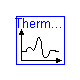
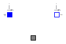

 



 


Parameters
| Name | Default | Description |
|---|
| T_on | | [K] |
| T_off | | [K] |
| tc_C[:] | | C vector that characterizes the thermocouple |
Modelica definition
model DigitalCircuit
parameter Modelica.SIunits.Temperature T_on;
parameter Modelica.SIunits.Temperature T_off;
parameter Real tc_C[:] "C vector that characterizes the thermocouple";
function polyval
input Real c[:];
input Real u;
output Real y;
protected
Integer n;
algorithm
n := size(c, 1);
y := 0;
for i in 1:n loop
y := y + c[i]*u^(n - i);
end for;
end polyval;
protected
parameter Modelica.SIunits.Voltage V_on=polyval(tc_C, T_on);
parameter Modelica.SIunits.Voltage V_off=polyval(tc_C, T_off);
Boolean furnace_on;
public
Modelica.Electrical.Analog.Interfaces.PositivePin thermo_n;
Modelica.Electrical.Analog.Interfaces.PositivePin furnace_p;
Modelica.Electrical.Analog.Interfaces.PositivePin furnace_n;
Modelica.Electrical.Analog.Interfaces.PositivePin thermo_p;
Modelica.Electrical.Analog.Interfaces.PositivePin unused;
Modelica.Electrical.Analog.Interfaces.PositivePin ground;
Modelica.Electrical.Analog.Ideal.IdealSwitch furnace_switch;
equation
connect(thermo_n, ground);
connect(unused, ground);
connect(furnace_switch.p, furnace_p);
connect(furnace_switch.n, furnace_n);
thermo_p.i = 0;
furnace_switch.control.signal[1] = not furnace_on;
// Control circuit logic
algorithm
when (initial()) then
furnace_on := thermo_p.v < V_on;
end when;
when (thermo_p.v >= V_off) then
furnace_on := false;
end when;
when (thermo_p.v <= V_on) then
furnace_on := true;
end when;
end DigitalCircuit;

Parameters
| Name | Default | Description |
|---|
| T_on | | [K] |
| T_off | | [K] |
Modelica definition
model DigitalThermostat
parameter Modelica.SIunits.Temperature T_on(start=300);
parameter Modelica.SIunits.Temperature T_off(start=305);
protected
parameter Real tc_C[:]={4.5e-8,3.4e-6,2.3e-3};
public
extends Thermostat;
Thermal.MixedDomain.Thermocouple thermocouple(C=tc_C);
DigitalCircuit controller(
T_on=T_on,
T_off=T_off,
tc_C=tc_C);
Modelica.Electrical.Analog.Basic.Ground ground;
equation
connect(thermal, thermocouple.node_a);
connect(controller.ground, ground.p);
connect(controller.thermo_p, thermocouple.p);
connect(controller.thermo_n, thermocouple.n);
connect(controller.furnace_p, p);
connect(controller.furnace_n, n);
end DigitalThermostat;

Parameters
| Name | Default | Description |
|---|
| capacity | | [W] |
Modelica definition
model Furnace
parameter Modelica.SIunits.Power capacity(start=27e+3);
Thermal.Interfaces.Node_a thermal;
Modelica.Electrical.Analog.Interfaces.PositivePin p;
Modelica.Electrical.Analog.Interfaces.NegativePin n;
Modelica.Electrical.Analog.Basic.Ground ground;
Modelica.Electrical.Analog.Sources.ConstantVoltage switch_voltage(V=5);
Modelica.Electrical.Analog.Basic.Resistor R1(R=1e+6);
Modelica.Electrical.Analog.Ideal.ControlledIdealSwitch relay(level=1e-3);
Thermal.MixedDomain.HeaterElement heating_element(R=120*120/capacity);
Modelica.Electrical.Analog.Sources.ConstantVoltage heater_voltage(V=120);
equation
connect(ground.p, n);
connect(switch_voltage.n, ground.p);
connect(switch_voltage.p, R1.p);
connect(R1.n, p);
connect(relay.control, p);
connect(relay.n, ground.p);
connect(heating_element.p, relay.p);
connect(heating_element.thermal, thermal);
connect(heater_voltage.n, ground.p);
connect(heater_voltage.p, heating_element.n);
end Furnace;

Parameters
| Name | Default | Description |
|---|
| ground_temp | | [K] |
| footprint | | [m2] |
| height | | [m] |
| h_wall | | [W/(m2.K)] |
| k_ground | | [W/(m.K)] |
Modelica definition
model House
parameter Modelica.SIunits.Temperature ground_temp(start=280);
parameter Modelica.SIunits.Area footprint(start=250);
parameter Modelica.SIunits.Distance height(start=4);
parameter Modelica.SIunits.CoefficientOfHeatTransfer h_wall(start=4.33);
parameter Modelica.SIunits.ThermalConductivity k_ground(start=0.4);
protected
parameter Modelica.SIunits.Area roof_area=footprint;
parameter Modelica.SIunits.Volume interior=footprint*height;
parameter Modelica.SIunits.Area wall_area=height*footprint^.5;
constant Modelica.SIunits.Time hour=60*60;
constant Modelica.SIunits.Time day=24*hour;
public
Thermal.Interfaces.Node_a n;
Thermal.Basic1D.Capacitance indoors(
cp=1000,
rho=1.5,
V=interior);
Thermal.Basic1D.BlackBodyRadiation roof(F=.01, A=roof_area);
Thermal.Basic1D.Convection wall(h=h_wall, A=wall_area);
Thermal.Basic1D.Conduction floor(
k=k_ground,
L=4,
A=footprint);
Thermal.BoundaryConditions.FixedTemperature ground(T=ground_temp);
Thermal.BoundaryConditions.VariableTemperature ambient_temperature;
Modelica.Blocks.Interfaces.InPort Tamb;
protected
Modelica.SIunits.CelsiusTemperature Tc=n.T + Modelica.Constants.T_zero;
Real Tf=Tc*9/5 + 32;
public
Modelica.Blocks.Sources.Trapezoid sun_position(
amplitude={140},
rising={4*hour},
width={4*hour},
falling={4*hour},
period={day},
offset={240},
startTime={8*hour});
Thermal.BoundaryConditions.VariableTemperature solar_temp;
equation
connect(wall.b, indoors.n);
connect(indoors.n, roof.a);
connect(indoors.n, floor.b);
connect(floor.a, ground.n);
connect(indoors.n, n);
connect(ambient_temperature.n, wall.a);
connect(Tamb, ambient_temperature.T);
connect(roof.b, solar_temp.n);
connect(sun_position.outPort, solar_temp.T);
end House;

Parameters
| Name | Default | Description |
|---|
| desired | | [K] |
Modelica definition
model MechanicalThermostat
parameter Modelica.SIunits.Temperature desired;
protected
constant Real factor=Modelica.Constants.PI/36;
parameter Modelica.SIunits.Angle setting=-factor - 2*factor*(desired - 300)/5;
public
extends Thermostat;
Thermal.MixedDomain.RotationalSpring spring(
c=1e+6,
T_nom=300,
dudT=Modelica.Constants.PI/90);
Modelica.Mechanics.Rotational.Inertia mechanism_inertia(J=1e-5);
Modelica.Mechanics.Rotational.Fixed rotation(phi0=setting);
MercurySwitch switch;
Modelica.Mechanics.Rotational.Damper damper(d=100);
equation
connect(spring.flange_b, mechanism_inertia.flange_a);
connect(rotation.flange_b, spring.flange_a);
connect(mechanism_inertia.flange_b, switch.rot);
connect(p, switch.p);
connect(switch.n, n);
connect(spring.node_a, thermal);
connect(damper.flange_a, rotation.flange_b);
connect(damper.flange_b, mechanism_inertia.flange_a);
end MechanicalThermostat;

Parameters
| Name | Default | Description |
|---|
| hysteresis | | [rad] |
| Gon | | [S] |
| Roff | | [Ohm] |
Modelica definition
model MercurySwitch
extends Modelica.Electrical.Analog.Interfaces.OnePort;
parameter Modelica.SIunits.Angle hysteresis(start=Modelica.Constants.PI/18);
parameter Modelica.SIunits.Conductance Gon(start=1e+5);
parameter Modelica.SIunits.Resistance Roff(start=1e+5);
protected
Boolean closed;
Modelica.SIunits.Angle upper=hysteresis/2.0;
Modelica.SIunits.Angle lower=-hysteresis/2.0;
public
Modelica.Mechanics.Rotational.Interfaces.Flange_a rot;
equation
i = if (closed) then Gon*v else v/Roff;
// i = 0.0;
rot.tau = 0.0;
algorithm
when (initial()) then
closed := rot.phi <= lower;
end when;
when (rot.phi <= lower) then
closed := true;
end when;
when (rot.phi >= upper) then
closed := false;
end when;
end MercurySwitch;

Modelica definition
partial model Thermostat
Thermal.Interfaces.Node_a thermal;
Modelica.Electrical.Analog.Interfaces.PositivePin p;
Modelica.Electrical.Analog.Interfaces.NegativePin n;
end Thermostat;

Parameters
| Name | Default | Description |
|---|
| thermostat1 | redeclare DigitalThermostat thermostat1(T_on=295, T_off=300) | |
| thermostat2 | redeclare MechanicalThermostat thermostat2(desired=295) | |
Modelica definition
model ThermostatSystem
extends BookExamples.Icons.RunnableExample;
House house1;
Modelica.Blocks.Sources.Trapezoid amb_temp(
amplitude={10},
rising={4*60*60},
width={4*60*60},
falling={4*60*60},
period={24*60*60},
offset={273.15},
startTime={9.5*60*60});
House house2;
Furnace furnace1(capacity=15e+3);
Furnace furnace2(capacity=15e+3);
replaceable DigitalThermostat thermostat1(T_on=295, T_off=300);
replaceable MechanicalThermostat thermostat2(desired=295);
equation
connect(amb_temp.outPort, house1.Tamb);
connect(house2.Tamb, amb_temp.outPort);
connect(house1.n, furnace1.thermal);
connect(furnace2.thermal, house2.n);
connect(thermostat1.thermal, house1.n);
connect(thermostat1.p, furnace1.p);
connect(furnace1.n, thermostat1.n);
connect(thermostat2.p, furnace2.p);
connect(thermostat2.thermal, house2.n);
connect(thermostat2.n, furnace2.n);
end ThermostatSystem;
HTML-documentation generated by Dymola Wed Sep 10 16:48:03 2003
.